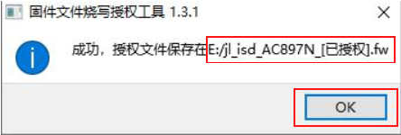
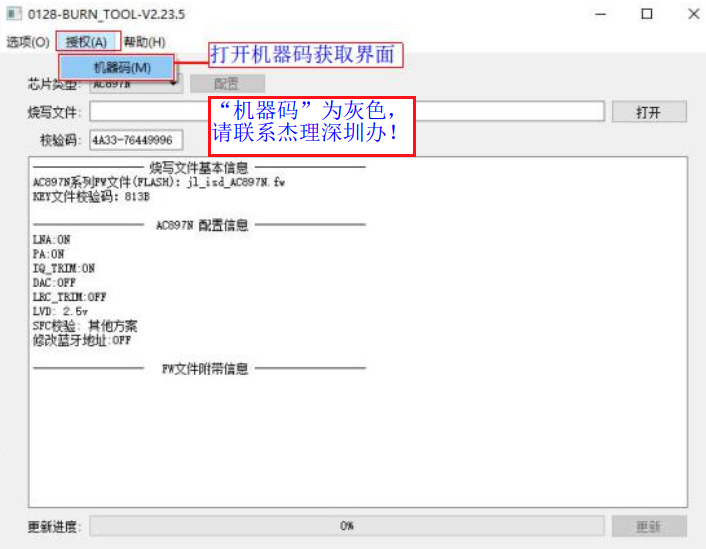
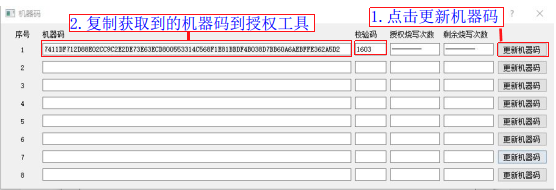
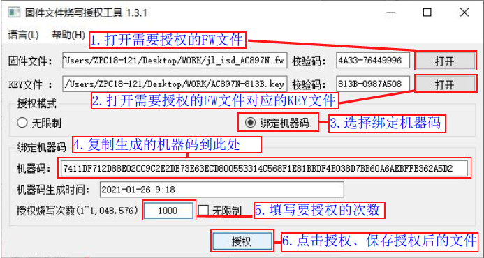
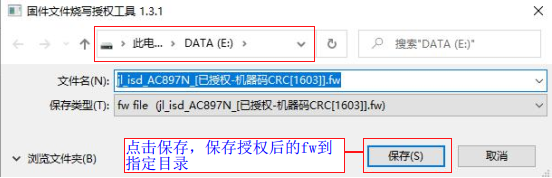
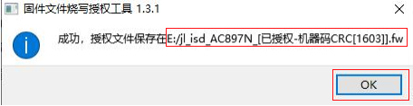
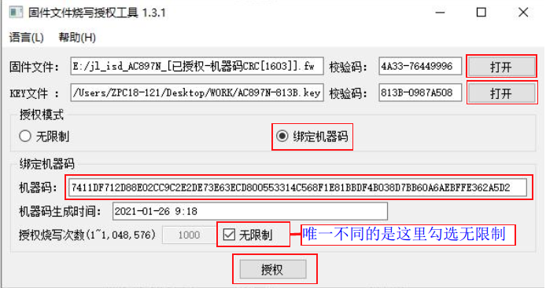
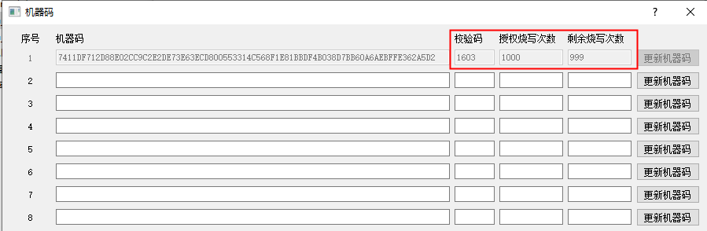

1.7. Authorized Programming Count Limit
1.7.1. Use case
For example, a developed target chip firmware fw programming file may be allowed to be programmed into only 1000 chips by a specified programmer. After 1000 programming operations, the programming file becomes invalid and can no longer be programmed with the programmer, which prevents others from profiting from it. To achieve this, you can apply an authorized programming count limit to the fw file.
1.7.2. Supported authorization methods
Authorization method |
Introduction |
|---|---|
Standard authorization |
This chapter describes the standard authorization mode |
Multi-algorithm authorization |
|
Private data authorization |
|
Programming-level authorization |
Contact a Jieli engineer if needed |
1.7.3. Introduction to standard authorization mode
FW/UFW files support two authorization modes: unrestricted mode and machine-code binding mode.
Unrestricted mode
FW/UFW files authorized in this mode are not bound to any specific 1-to-2 programmer. Any 1-to-2 programmer with a matching KEY can load and program them, with no difference from fw/ufw files that have not been authorized.
Machine-code binding mode
FW/UFW files authorized in this mode can be loaded and programmed only by the programmer to which the bound machine code belongs.
1.7.4. Creating a fw file authorized in unrestricted mode
On the PC, double-click the executable of the firmware file programming authorization tool, 固件文件烧录授权工具_(version number).exe (contact Jieli's Shenzhen office to obtain this tool), to open the tool window. Follow steps 1 to 4 shown in Generating an unrestricted authorized fw file; the window shown in Saving an unrestricted authorized fw file then appears. Click "Save" (保存) to save the authorized fw file to the specified directory.

Generating an unrestricted authorized fw file

Saving an unrestricted authorized fw file
After you click "Save" (保存), a message appears confirming that the file was saved and showing the exact save path, as shown in Message after saving the authorized fw file; click OK.

Message after saving the authorized fw file
1.7.5. Authorization in machine-code binding mode
1.7.5.1. Creating a fw file with a programming count limit
Machine code generation steps
[1] On the PC, open the firmware update window (if you are not sure how, see the "Opening the deployment program interface" section);
[2] As shown in Opening the machine code window, select "Authorization(A)" (授权(A)) -> "Machine code(M)" (机器码(M)) in the menu bar to open the machine code generation window;
[3] As shown in Machine code generation window, click "Update machine code" (更新机器码) and copy the generated machine code into the authorization tool to authorize the fw file.
Note
If the "Machine code" (机器码) option is grayed out, check whether the programmer's "main control board" hardware supports the authorized count feature (only main control boards of hardware version V5.0 support this feature). For details, see the "Introduction to the programmer main unit" section.

Opening the machine code window

Machine code generation window
Note: One programmer can generate eight machine codes, so 8 fw files with an authorized count limit can be created. Only machine code number 1 is used here as an example for authorizing a fw file; generating the machine codes with the other numbers and creating the authorized fw files follows the same process.
Generating a fw file authorized with a machine code
[1] On the PC, double-click the executable of the firmware file programming authorization tool,
固件文件烧录授权工具\_(version number).exe, to open the tool window;[2] Follow steps 1 to 6 shown in Generating a machine-code-authorized fw file; the save window shown in Save window for a machine-code-authorized fw file appears. Click "Save" (保存) to save the authorized fw file to the specified directory;
[3] After you click "Save" (保存), a message appears confirming that the file was saved and showing the exact save path, as shown in Message after saving the authorized fw file; click OK.

Generating a machine-code-authorized fw file

Save window for a machine-code-authorized fw file

Message after saving the authorized fw file
1.7.5.2. Creating a fw file without a programming count limit
The steps for creating a fw file without a programming count limit are basically the same as for creating one with a count limit. The only difference is that you check "Unlimited" (无限制), as shown in Window for generating a machine-code-authorized fw file with unlimited count. After configuring, click "Authorize" (授权) to generate the corresponding authorized file.

Window for generating a machine-code-authorized fw file with unlimited count
1.7.6. Programming with count-limited authorized firmware
Programming an authorized FW file
For example, if you have created a fw programming file limited to 1000 programming operations, jl_isd_AC897N_[已授权-机器码CRC[1603]].fw, update this fw file to the programmer as described in the "Deploying the target chip firmware to the programmer" section. After the authorized fw file has been updated to the programmer, follow the normal chip programming procedure. Once 1000 chips have been programmed successfully, the programmer no longer allows this FW file to be programmed, and the display shows "Count overflow" (次数溢出).
Viewing the authorized count usage
To check the authorized count usage partway through, proceed as follows:
[1] On the PC, open the firmware update window (if you are not sure how, see the "Deploying the target chip firmware to the programmer" section);
[2] In the menu bar of the target chip firmware update window, select "Authorization(A)" (授权(A)) -> "Machine code(M)" (机器码(M)) to open the machine code control panel shown in Window for viewing the authorized count usage; find the machine code number whose checksum corresponds to the fw file and check the remaining count.

Window for viewing the authorized count usage
Changing the programming firmware partway through
Changing the programming firmware partway through does not cause the authorized count information of the current fw to be lost; you can later update the currently authorized FW back to the programmer and continue using it. The original authorization information for the current number becomes invalid only if, after other firmware has been updated, the machine code with the current number is updated again.
1.7.7. Notes
The authorized count limit feature of the 1-to-2 programmer can only be used after replacing the main control board with one of hardware version V5.0. See the "Introduction to the programmer main unit" section to identify whether the current main control board supports the authorized count limit feature.
Keep unauthorized fw files secure and do not forward them to others; otherwise, the authorized programming count limit is meaningless.